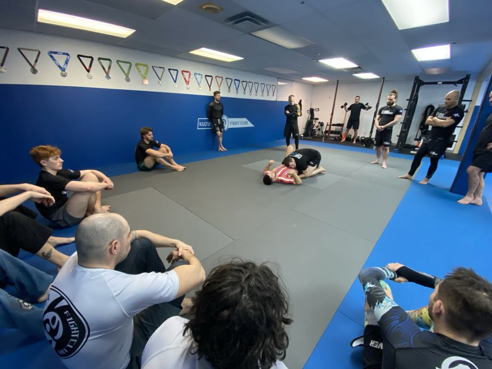
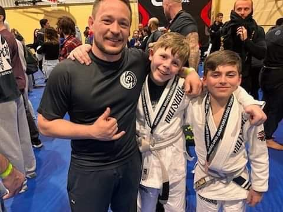

Cours pour adultes
Nos classes sont organisées en fonction du type d'uniforme (Gi ou Nogi) ainsi que du niveau d'expérience. Vous y apprendrez des techniques d'amener au sol (takedowns), des immobilisations et des techniques de soumission (étranglement et clés d'articulation), toutes réalistes et efficaces, que ce soit pour le plaisir, la mise en forme ou la compétition.
Comme vous pouvez le voir dans notre section horaire, nous offrons :
- Des cours pour débutants (Gi et Nogi)
- Des cours pour tous les niveaux (Gi et Nogi)
- Des cours avancés (Nogi uniquement)
Les cours pour débutants mettent l'accent sur les techniques de base et les mouvements essentiels, vous permettant d'acquérir une bonne compréhension des concepts fondamentaux du Jiu-Jitsu brésilien. Toutes les techniques nécessaires pour progresser de la ceinture blanche à la ceinture bleue (la première ceinture après la blanche pour les adultes) sont couvertes dans ce cours.
Les cours pour tous les niveaux se concentrent sur des techniques adaptées à la compétition. Bien que plus complexes, les techniques enseignées restent accessibles à tous les participants.
Nos entraîneurs expérimentés seront heureux de vous transmettre les concepts et les détails essentiels qui font toute la différence.
Gi vs Nogi
Traditionnellement, le Jiu-Jitsu brésilien se pratique en Gi (ou kimono), un uniforme qui offre des possibilités de saisies supplémentaires et ralentit la vitesse des échanges.
*La location de l'uniforme est gratuite pour la première classe.
En revanche, le Nogi se distingue par l'absence de saisies et est plus dynamique, ressemblant davantage au Jiu-Jitsu que l'on voit lors des compétitions d'arts martiaux mixtes (MMA). Il se pratique en shorts de sport et en rashguard ou t-shirt. Le Nogi gagne en popularité à une vitesse fulgurante.
*L'adhésion à ce programme vous donne accès à tous les cours de Jiu-Jitsu brésilien de notre horaire.
Réservez votre cours d'essai gratuit ici ! Pour plus d'informations sur le jiu jitsu brésilienCours pour enfants (5-10 ans)

La plupart des arts martiaux consistent à frapper l'attaquant avec des coups de poing et des coups de pied, mais dans notre programme, nous adoptons une approche différente. Toutes les techniques sont purement défensives et n'utilisent pas de frappes. De plus, nous enseignons aux enfants comment désamorcer les confrontations. Si la confrontation ne peut absolument pas être évitée, nous proposons des techniques pour neutraliser la menace de manière non violente et prendre le contrôle jusqu'à l'arrivée des secours. Dans ce programme, vous n'avez jamais à vous soucier que votre enfant intimide qui que ce soit sous notre tutelle.
Pour les plus jeunes, la classe met l'accent sur le plaisir, tout en favorisant l'exercice physique et la socialisation avec d'autres enfants. Vos enfants acquerront des compétences de base grâce à des jeux et des exercices ludiques qui développent le travail d'équipe, la coordination et un bon comportement.
Réservez votre cours d'essai gratuit ici ! Pour plus d'informations sur le jiu jitsu brésilienCours pour adolescents (10-15 ans)
Le programme a pour objectif principal de les initier aux deux aspects du jiu-jitsu brésilien. Ils apprendront à gérer toutes sortes de situations d'autodéfense et seront introduits à la pratique du jiu-jitsu sportif. Ce merveilleux sport les aidera à se développer physiquement et mentalement.
Aspect physique :
- Endurance et force musculaire
- Endurance cardiovasculaire
- Développement de la flexibilité
- Amélioration du sens de l'espace
- Coordination motrice accrue
Aspect mental :
- Meilleure capacité à gérer les situations stressantes à l'extérieur du dojo
- Réduction du stress et de l'anxiété
- Augmentation de la confiance en soi (facteur n°1 pour éviter l'intimidation)
En plus de tous ces bénéfices, les juniors auront l'opportunité de participer à des compétitions. Bien que facultative, la compétition est un excellent outil pour apprendre à gérer le stress dans des situations exigeantes. L'exposition à la pression le jour de la compétition ainsi que la rigueur nécessaire pour se préparer avant l'événement contribueront à former un jeune adulte avec un mental fort, prêt à affronter le monde.
Réservez votre cours d'essai gratuit ici ! Pour plus d'informations sur le jiu jitsu brésilienCours privés ou semi-privés

Horaire de nuit, de soir ou tout simplement très occupé avec les enfants ?
Les cours privés offrent une flexibilité maximale dans le choix des plages horaires, vous permettant ainsi d'approfondir vos connaissances en jiu-jitsu brésilien malgré un emploi du temps chargé.
Nos instructeurs expérimentés seront ravis d’élaborer un plan personnalisé pour vous aider à progresser vers vos objectifs, qu’il s’agisse d’auto-défense, de techniques fondamentales ou avancées. Dites-nous vos objectifs, et nous vous aiderons à les atteindre !
Contactez-nous pour connaître nos disponibilités !